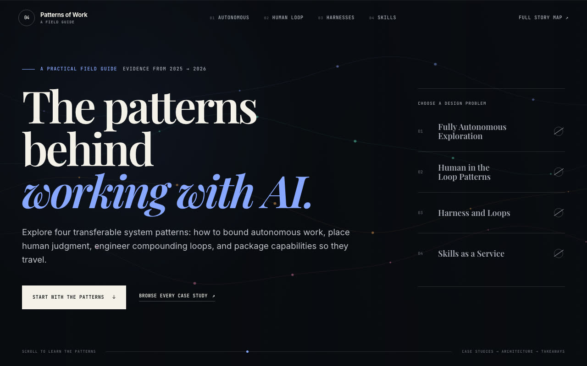
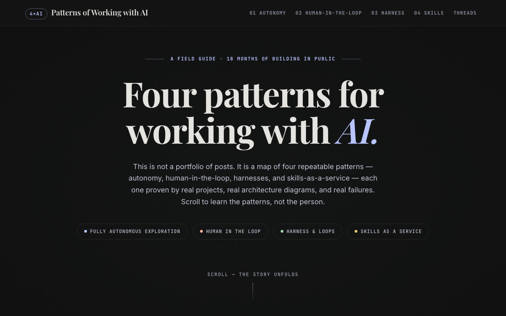
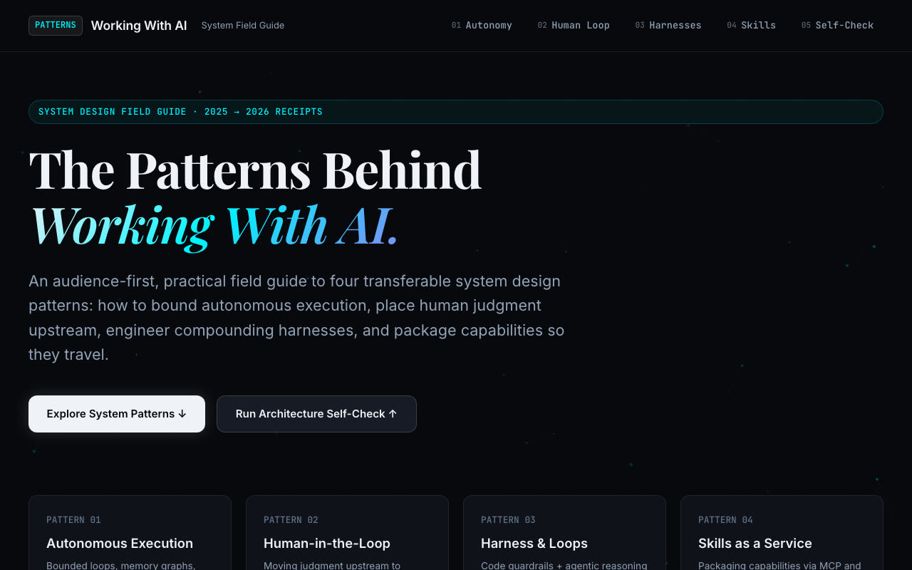
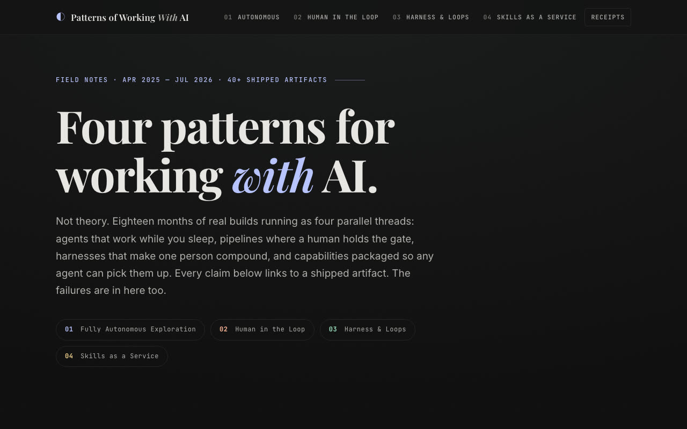
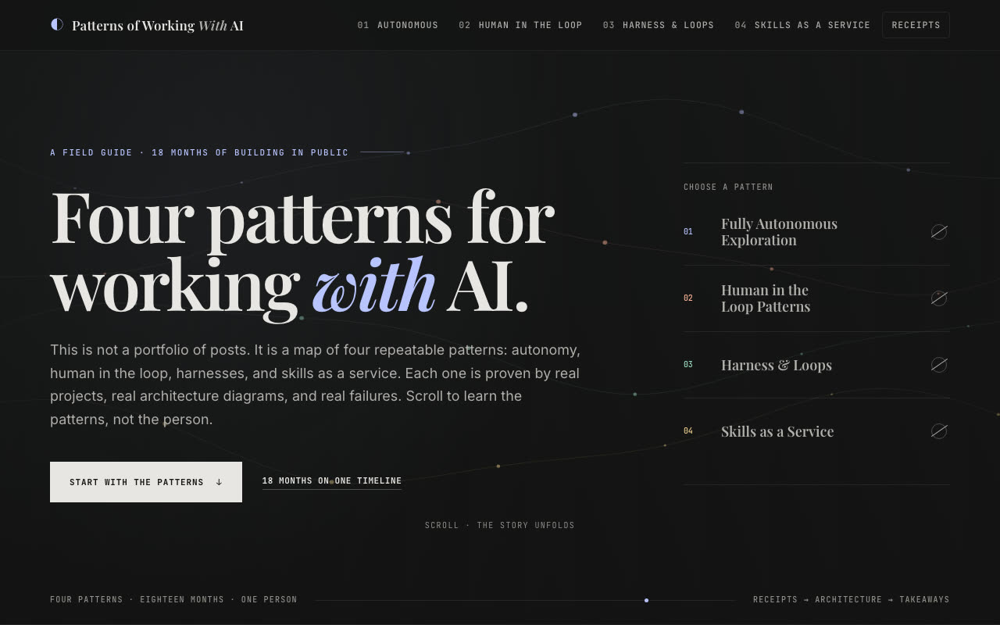
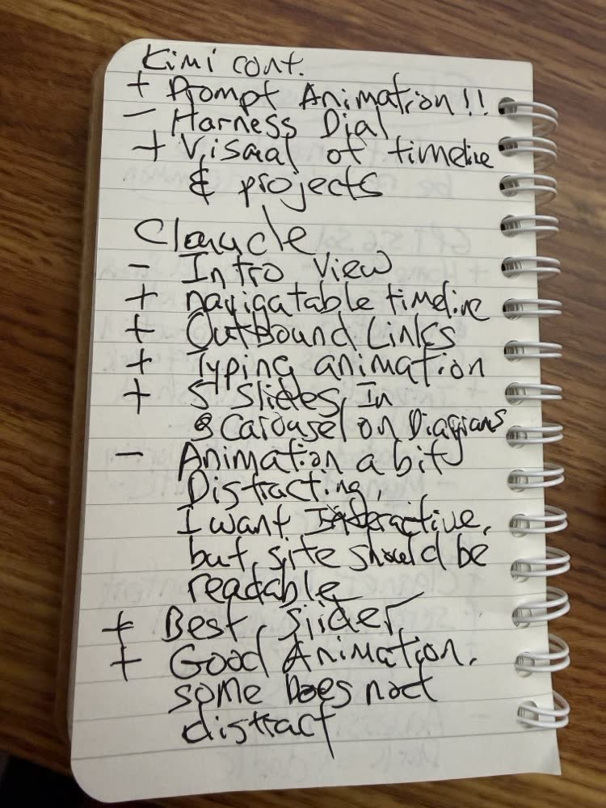
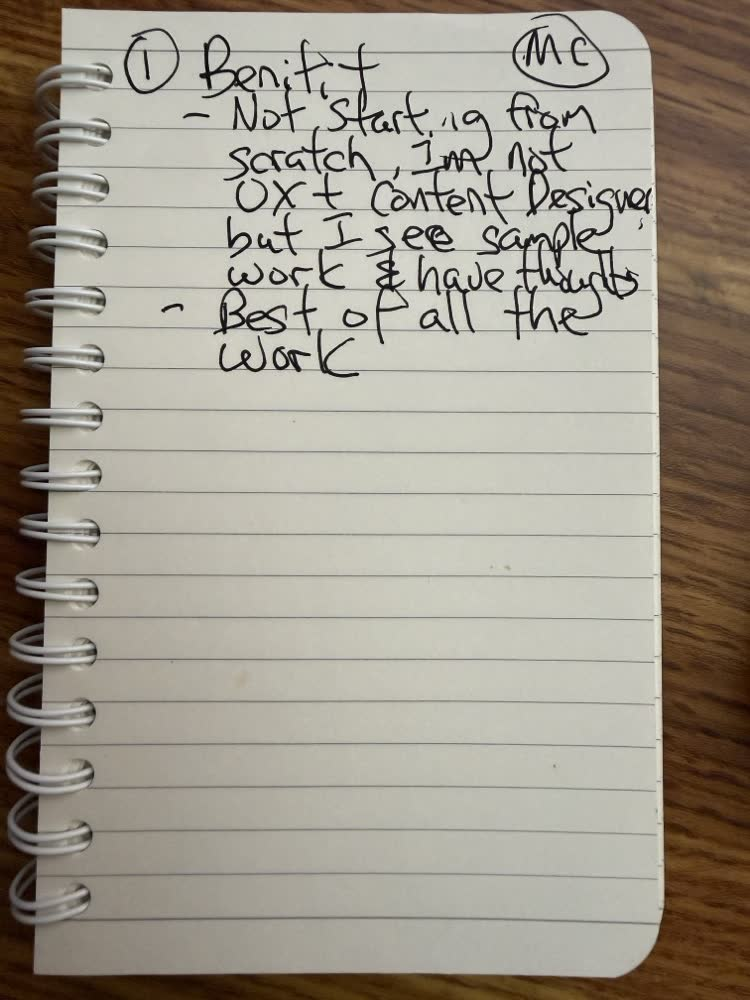

Most of the video is me going through each model's site, one at a time, with the pros and cons from my notebook. This page follows the same order, and each part links to its moment in the video.
First published on LinkedIn on July 21, 2026. Rewritten for this site in October 2026. Line counts on this page come from the five builds as they were on the night of the video.
1. One prompt, four ingredients
I made it challenging on purpose. The prompt is 1,032 lines, and it is a merge of four things.
- A mountain of context. A library of 48 files, 4,817 lines of markdown, mined from every project, post and talk of the last 18 months. The library has its own catalogs and indexes, and the models read what they need. So this also tests whether a model can traverse a lot of context to do a thing.
- A common design from Google Stitch, about 990 lines of HTML, so all four sites start from the same visual language. In theory the result should look a lot better than my old blogs and videos page, which works but isn't what I'd call premium.
- Premium storytelling. I'm exploring different ways to present the material, and I called out Adobe here: I think their SLICC site looks very cool, the way it tells you a story as you scroll. My prompt asks for four themes, every project told inside one of them, as a single-page scroll story.
- Ground rules. Three files, HTML, CSS and JavaScript, and build on the prior work instead of redoing it.

prompt.txt, the same input four times.I judged each one on four things: how it interpreted the situation, how it handled that much context, whether it made things up, and how well it did premium storytelling on top of the design. Because they all got the same design and the same library, the four sites came back looking like siblings. The differences are in the details: animations, interactions, and what holds up and what breaks. Tab through the four home screens, and the merge:





Watch this part0:12 5,000 lines of context0:43 A design from Stitch1:23 Premium storytelling
2. GPT 5.6: my favorite home screen, and a glaring hole
First up, GPT 5.6 Sol, which I ran in Codex. When I first land on this screen, it looks quite nice. It's one of my favorite home screens of the four. I don't love the navigation, but I like the home screen a lot.
As I scroll, the site looks pretty and it functions, but the navigation bar doesn't light up as I scroll. There is a scroll bar at the very top, but it's hard to see. The aesthetics are clean, and it did a good job mirroring Stitch. The carousel with overlapping cards is nice, there's animation as I scroll, and the slider is accurate.
What I didn't like: clickable elements that don't do anything. And then one screen came up with content missing. For a premium model, I did not expect that screen to ever come up. Overall it's visually pleasing with visual flaws, and highly usable as a base. I would use it.
![Handwritten notebook page titled Model Comparison. At the top, circled: content needs to be reworked, common. GPT 5.6 Sol: plus home screen look and feel and animation, plus clean blocks, plus interaction, plus scrolling animation; minus second screen content, minus interaction doesn't work, minus unfinished work, minus not working on the 4th tile, minus menu and top bar. Kimi: plus cleaner intro content, plus scrolling animation, plus content found, plus subslides with two exclamation points, minus accessibility, dark on dark.](images/notebook-2025.jpg)
Watch this part2:22 GPT 5.63:27 Clickable but does nothing
3. Kimi K3: it dug deepest into the context
Second, Kimi K3 in thinking mode, from Moonshot. It's one of the open-weight Chinese models competing with the top models right now. I've always liked Kimi's models because they're cheaper, and because I really like the slide decks it builds: pass in a few markdown files from a codebase and you get usable, editable slides full of accurate information that I'd be happy to take to a conference.
On the site, the first screen looks a little different. I still like GPT's more, but I like that there isn't a ton of information before you get to the material, and the navigation bar lights up as I scroll, which GPT's didn't. One part is very dark and hard to see; that may have come from the Stitch design, but I don't know how accessible it is. The carousel didn't have GPT's overlapping effect, but it works.
There are two animations I really liked. Agent work is tough to demonstrate, and one of them shows two things talking to each other. The other counts numbers up as you scroll down. Kimi also got the only double exclamation points in my notebook, for its subslides and its prompt animation. And it picked out the five parts of my talk. Kimi understood the 5,000 lines of context better than GPT did.
The part I didn't like: one piece completely missed the mark. It made up a bunch of stuff. In my notebook that's the minus next to the harness diagram. Overall, though, the navigation works better than GPT's, there's no glaring defect like GPT's missing content, and at the bottom it plotted my projects into categories on a timeline, which I don't think I asked for. I'm happy to see AI taking the premium storytelling to another level.
Watch this part4:08 Kimi K35:37 The site6:31 Five parts of my talk7:01 Made up
4. Gemini 3.5 Flash: the most disappointing of the four
Third, Gemini 3.5 Flash, set to high. I won't spend long here. It was the most disappointing model of the four we tested. It looks basic, it isn't premium storytelling, and the scrolling animation is extremely lacking. My notebook has no notes for it at all. Sorry, Google, we're moving on.
Watch this part7:50 Gemini 3.5 Flash
5. Claude Fable 5: the most premium, with too much animation
Last, Claude Fable 5. It opens with a timeline chart, similar to Kimi's, except Claude made it navigable: click a project and it takes you to that part of the page. That's storytelling over a timeline, very well executed. I don't like that the items wrap onto two lines.
Some of it is too flashy. A few elements are too bright, and when I'm trying to read, things flashing next to the text are distracting. It tried a little too hard with the animation. I want interactive, but the site should be readable. Still, overall it looks very premium, and Fable took in the design system from Stitch very well. The carousel is my favorite of the four because it saves space, where Kimi's version ran too long. It also found the outbound links, so every project points to the real post, and it had a typing animation and the best slider.

Comparing all four, I'd rank Fable number one, Kimi number two and Codex, GPT 5.6, number three, especially because GPT literally had missing content in its HTML. I know it's a one-shot, but we're comparing state-of-the-art models now.
Watch this part8:14 Claude Fable 510:03 My ranking
6. Merging the best of all four
Then I took all four and told AI to merge them. This is the important part, because there are clearly elements I like and don't like in each one. I took my paper notes, photographed them and uploaded them to Fable 5: pluses are good, minuses are bad. In case it couldn't read my scribbles, it asked me eight multiple-choice questions. Then it built a combined page from the elements I liked.

So the final has GPT's home screen, Kimi's animation and scrolling, and Claude's navigation. I felt it took more of Kimi's HTML, which was a more faithful take on the original Stitch design. I also told AI to dim the animations once they stop, so they aren't overly aggressive, and it did a really good job of that. The numbers count up like in Kimi's and Claude's, and I took the carousel view.
Afterward I wanted to see what the merge actually kept, so I traced every line of the final files back to the four builds. Pick a model to compare what I said I kept with what the lines say:
Model
What I said I kept from Claude Fable 5
Where the final's lines came from
| Distinct lines in the final | HTML | CSS | JS |
|---|---|---|---|
| Only in Claude Fable 5 | 459 | 425 | 237 |
| Only in Kimi K3 | 1 | 11 | 2 |
| Only in GPT 5.6 | 5 | 19 | 1 |
| Only in Gemini 3.5 Flash | 0 | 0 | 4 |
| In two or more builds | 31 | 148 | 19 |
| New in the merge | 67 | 167 | 118 |
| Total | 563 | 770 | 381 |
The trace says something I didn't say on camera. Line for line, the final is Claude's skeleton: more than half of every file appears only in Claude's build. What I picked from GPT and Kimi, the home screen layout, the scrolling, the counters, mostly came in as new code written to match them, which is why the merge added hundreds of lines no model wrote. A line count can't see a design choice, so both views are true. The skeleton is Claude's, and the feel is a mix of all three.
The one benefit I wrote down for myself: I'm not starting from scratch. I'm not a UX designer or a content designer, but seeing four versions of the same thing, I do have some taste. I can take what I like from all four and combine it into one, and for my taste the combined result is by far the best of the five.
Watch this part10:29 Merging all four11:00 Eight questions11:36 The combined site
7. What I took away, and which model to pay for
Being able to run this test with all four frontier models, take what I liked from each and put it together into one final output is something you could do for many different tasks, not just storytelling in HTML. You don't have to pick one model up front. Make them compete, keep the best of each, and merge.

On the subscription question I opened with: I'm fortunate to have a paid subscription to each of these, at enough capacity to run tests like this without draining any one of them. All of them are good. ChatGPT's plans get you further for the money than Fable's. Fable is clearly the state-of-the-art model that everyone is competing against. And Kimi K3 is good, especially if you like its slide and deck building; I pay for Kimi so I can build decks and run some of my work in its cloud.
If you've run your own bake-off on a real project, I'd like to know whether you crowned a winner or merged like I did.
Watch this part13:05 What I took away13:18 Choosing a model